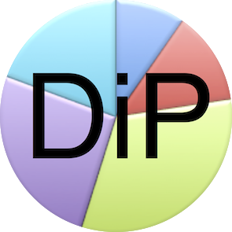

*** * * * * * * * * * * * * ***

Jobs
Federal Party SA (FPSA) is a vehicle all South Africans can use to solve the problems of South Africa. FPSA is the party for self-determination of all folks/groups, but each folk/group needs leaders to represent them in FPSA. Leaders must come forward and make themselves available. Votes for self-determination must come together in FPSA to effectively oppose the imperialist parties, which prioritise centralised governance. The following people are needed currently.
Fundraising
Please have a look at the fundraising page, where the current possibilities are explained. Donations can be sourced. Also, a funding project is explained, whereby cryptocurrency investments, fund FPSA. South African citizens of all groups must fund FPSA. A high commission of 50% is payable by DiP to fundraisers on funds raised.